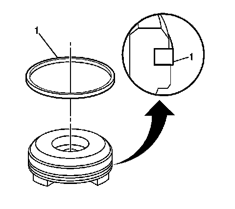

Accumulator Assembly, Spacer Plate, and Gaskets
Accumulator Assembly, Spacer Plate, and Gaskets
Tools Required
^ J 25025-B Dial Indicator Post and Guide Pin Set
^ J 36850 Transjel Lubricant
Removal Procedure
1. Remove the transmission filter.
Important: The 1-2 accumulator can be removed without removing the valve body.
2. Remove the valve body.
3. Remove the accumulator cover bolts.
4. Remove the 1-2 accumulator cover.
Important: regular production option (RPO) M33 transmissions do not use a 1-2 accumulator spring inner (104).
5. Remove the 1-2 accumulator cover (57) and pin.
6. Disassemble the 1-2 accumulator assembly (54, 56, 57, 104).
7. Inspect the 1-2 accumulator springs for cracks.

8. Remove the 1-2 accumulator piston seal (1) from the 1-2 accumulator piston.
9. Inspect the 1-2 accumulator piston for the following conditions:
^ Porosity
^ Cracks
^ Scoring
^ Nicks and scratches
10. Inspect the 1-2 accumulator cover for the following conditions:
^ Porosity
^ Cracks
^ Scoring
^ Nicks and scratches
11. Remove the spacer plate support bolts.
Important: Use care not to drop the following items that will be removed along with the spacer plate:
^ The number 1 checkball
^ The 3-4 accumulator spring
^ The 3-4 accumulator pin
Remove the spacer plate support.
12. Remove the spacer plate to valve body gasket, the spacer plate and the spacer plate to transmission case gasket.
13. Remove the 3-4 accumulator piston (2).
14. Inspect the 3-4 accumulator spring for cracks.
15. Remove the 3-4 accumulator piston seal (1) from the 3-4 accumulator piston.
16. Inspect the 3-4 accumulator piston for the following conditions:
^ Porosity
^ Cracks
^ Scoring
^ Nicks and scratches
Installation Procedure
1. Install a new 3-4 accumulator piston seal (1) to the 3-4 accumulator piston.
2. Install the 3-4 accumulator pin (1) into the transmission case and retain the pin with J 36850.
3. Install the 3-4 accumulator piston (2) onto the pin (1) in the transmission case.
Ensure that the 3-4 accumulator piston legs face away from the transmission case.
4. Install the J 25025-B (2, 3) to the transmission case.

5. Install the spacer plate to transmission case gasket and the spacer plate to valve body gasket to the spacer plate; use J 36850 in order to retain the gaskets to the spacer plate.
^ The case gasket is identified by a C.
Be sure to place the case gasket on the transmission case side of the spacer plate.
^ The valve body gasket is identified by a V.
Be sure to place the valve body gasket on the valve body side of the spacer plate.
6. Ensure that the solenoid screens (1, 2) are in place on the spacer plate.
7. Place the checkball (3) on the spacer plate in the location shown.
8. Place the 3-4 accumulator spring (4) on the spacer plate.
9. Install the spacer plate and related components to the transmission.
Notice: Refer to Fastener Notice.
10. Install the spacer plate support and the spacer plate support bolts.
Tighten the bolts to 11 N.m (97 lb in).
11. After installing the spacer plate support (2), look through the hole in the spacer plate to ensure that the checkball (1) has remained in the proper location.
12. Install a new 1-2 accumulator piston seal (1) to the 1-2 accumulator piston.
Important: RPO M33 transmissions do not use a 1-2 accumulator spring inner (104).
13. Assemble the 1-2 accumulator assembly (54, 56, 57, 104). Ensure that the piston legs face the accumulator cover.
14. Install the 1-2 accumulator cover (57) and pin.
15. Install the 1-2 accumulator cover and the accumulator cover bolts.
Tighten the bolts to 11 N.m (97 lb in).
16. Remove the J 25025-B from the transmission case.
17. Install the valve body.
18. Install the transmission filter.
Important: It is recommended that transmission adaptive pressure (TAP) information be reset.
Resetting the TAP values using a scan tool will erase all learned values in all cells. As a result, the engine control module (ECM), powertrain control module (PCM) or transmission control module (TCM) will need to relearn TAP values. Transmission performance may be affected as new TAP values are learned.
19. Reset the TAP values. Refer to Transmission Adaptive Functions (TCM).